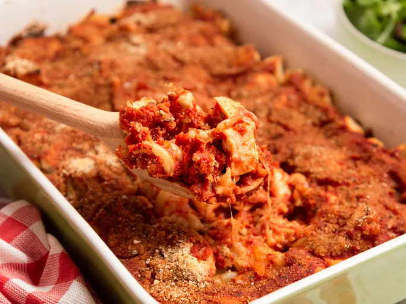

Home
Chicken Parmesan Casserole

Description
Chicken Parmesan Casserole is a hearty, crowd-pleasing twist on the Italian classic. Juicy chicken is layered with rich marinara sauce, melted mozzarella, and Parmesan cheese, then baked to bubbly perfection with a golden breadcrumb topping. Each bite combines comforting flavors of tender chicken, gooey cheese, and savory tomato sauce, making it the ultimate easy, family-style dinner.
Ingredients
- 2 cups rotini pasta
- 12 ounces cooked chicken, cubed
- 1 cup shredded mozzarella cheese
- 2 cups marinara sauce2 cups marinara sauce
- ½ cup seasoned bread crumbs
Steps
Step 1
- Gather all ingredients. Preheat the oven to 350 degrees F (175 degrees C).
Step 2
- Fill a large pot with lightly salted water and bring to a rolling boil over high heat. Cook rotini in boiling water until tender yet firm to the bite, about 8 minutes. Drain.
Step 3
- Stir together cooked rotini, chicken, and mozzarella cheese in a large casserole dish.
Step 4
- Pour marinara sauce over pasta mixture; sprinkle with bread crumbs. Cover the dish with aluminum foil.
Step 5
- Bake in the preheated oven until cheese is melted, about 35 minutes.
Step
- Serve and enjoy.